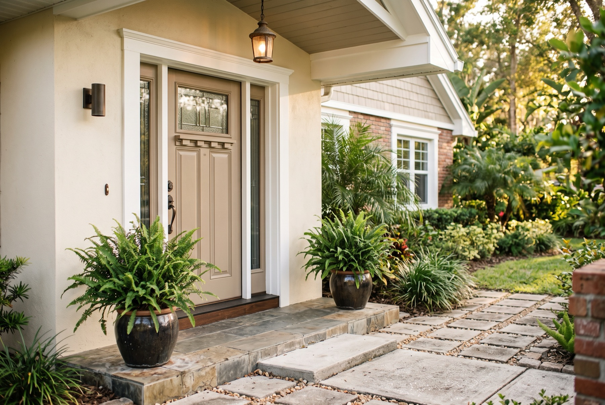

For sellers
See the number clearly, and list it once.
A sale has three parties: you, the buyer, and the market. I start with your goals, weigh them against what the market will support, and build the plan, price included, from both.

How I work with sellers
Before we talk about price, I want to know what your goals are. Selling fast and selling for the most money pull against each other more often than people expect, and neither answer is wrong — but they call for different plans: a different price, a different way of marketing it, a different read on which offers are worth taking. I ask first, then build around it.
That starts before a photographer ever shows up. I walk the house with you, price it against real recent sales, and say what's worth doing before it goes live. Once you accept an offer, a transaction coordinator keeps the file moving to closing, and I stay on the parts that call for judgment.
The price
A number you can defend, not a number that sounds good
The market decides what a house is worth — not me, not you, and not the buyer. I read what it's saying from closed sales near you over the last few months, adjusted for the real differences between those houses and yours: size, condition, lot, updates. A comp from a year ago is already stale in a market that moves, so I price you from what's actually current.
Overprice it and the market tells you before you want to hear it: the listing sits, the price gets cut, and buyers start asking what's wrong with it. Underprice it and you've left money on the table before the first showing. The goal is a number that's right the first time, so the only negotiating left is the good kind.
Repair or price around it
Fix it, or don't, but decide on purpose
Not every repair pays for itself, and not every flaw is worth ignoring. The real question isn't “fix it or not” — it's whether skipping it costs you more at the negotiating table than fixing it would cost up front.
Say a roof is older and showing wear but isn't leaking. A replacement might run $12,000–18,000. If buyers in the area are only discounting older-roof homes by a few thousand dollars, replacing it is close to a wash: you'd be spending money to move a number that mostly moves on its own. If inspectors are flagging it and buyers are asking for $20,000 off, the math flips.
- The repair
- A real, quoted cost — not a guess
- The alternative
- Price around it, and expect buyers to ask for something back
- The actual question
- Which number comes out higher once the cost, the timeline, and the buyer's confidence are all counted
The boundary
That's process knowledge, not an inspection. I can give you a practical read on what a house looks like it needs and roughly what that tends to cost, so you're deciding with real numbers instead of a guess. For anything structural, a licensed inspector or engineer is the right call before you spend a dollar.
Getting it ready
What buyers notice first
Buyers decide how a house feels within the first few photos, then spend the showing looking for reasons to worry. Decluttering, a clean coat of paint where it's needed, and good light in the photos do more for the price than most sellers expect — often more than an expensive renovation would.
I'll walk through with you before it's listed and say what's worth doing, what isn't, and what order to do it in, so you're not paying to fix the same thing twice.
While it's listed
You'll know what's happening, not only how it ends
Once it's live, you'll hear from me about what's actually going on: who's looked at it, what they said, and what that means for where the price should sit — not only when there's an offer. Strong interest is worth passing along. A quiet week is information too, and better to act on early than to discover it three price cuts later.
Negotiation and to closing
The better offer isn't always the bigger number
A higher price with weak financing or a long list of contingencies can be worth less than a smaller offer that actually closes. Part of the work is reading the difference between them — the financing, the timeline, and the repairs a buyer is likely to ask for after inspection. The rest is negotiating the whole offer, not the price alone.
I'm a certified Real Estate Negotiation Expert. Between contract and closing, most of what goes wrong is a date missed or a document late, so I stay ahead of the lender, the title company, and the calendar, and tell you early if something needs your attention.
Tell me about your house
Start here, and I'll follow up personally
The address, your timeline, and what matters most to you — selling fast, the most money, or a balance of both. I'll use it to put together a straight read on price and next steps, not a form-letter reply.
How this starts
A conversation, before a sign goes in the yard.
Tell me about the house and what you're weighing. I'll walk it with you, give you a straight read on price and what's worth fixing, and we'll decide together whether now is even the right time to list. No charge for that conversation, and no pressure to move faster than makes sense.